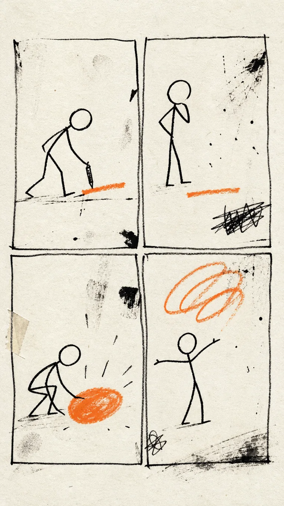

01 / COVER
The hand begins before the committee meets.
A constraint can be an escape hatch. Not “make bad work forever.” Make the first move cheaper than the judgment attached to it.
BEGIN →
An eight-page argument for deliberate imperfection as a creative technology.
A constraint can be an escape hatch. Not “make bad work forever.” Make the first move cheaper than the judgment attached to it.
The phrase appears as a deliberate pairing in an early comics note. [4] checked
The same archive's instruction was blunt: start and post. [1] checked
Lynda Barry describes children's drawings as emerging from hand movement rather than a settled intention. [5] checked
An eyebrow slips; surprise becomes anger; the story changes with it. [6] checked

Generated illustrationOriginal generated study. The figures are not examples of Barry's or Shrigley's art and do not imitate either artist.
Barry warns that worrying about value to others before the thing exists can immobilize the maker. [3] reported
David Shrigley calls the gap between image and text “slippage”: neither simply describes the other. [7] checked
The joke, or charge, lives in the voltage between them.
Research on perfectionism and creativity is mixed. One 2012 study found weak positive links for adaptive perfectionism on some measures, not a clean opposition. [2] checked
It can lower the cost of beginning, keep accidents available, and make the turn matter more than finish. [S] synthesis
Exact evidence spans, limitations, and source tiers. The personal source is a narrow, public-safe excerpt:not the private archive.
The archive’s early anti-perfectionism rule was to start and post rather than wait for polish.
tier A 01 stream comics
Just post it, give it a start Tyler will take care of the rest.
A 2012 study found only weak and mixed relationships between adaptive perfectionism and creativity, not a simple opposition.
tier A 05 perfectionism research
Adaptive perfectionism was weakly positively related to creativity, whereas maladaptive perfectionism was unrelated to creativity across five of the six measures.
Barry warns that judging a work’s value to others before it exists can immobilize the maker.
tier B 03 lynda barry classroom
Worrying about its worth and value to others before it exists can keep us immobilized forever.
A 2016 archive note deliberately paired good writing with bad illustration.
tier A 01 stream comics
Good writer and a bad illustrator
Lynda Barry describes young children’s drawings as arising from hand movement rather than a settled intention.
tier A 02 lynda barry npr
Their drawings seem to come from the movement of their hands, rather than an intention.
Barry says a drawing accident can redirect the story being made.
tier A 02 lynda barry npr
She says the drawing can redirect a story: a slipped eyebrow changes surprise into anger, and the cartoonist can follow that accident.
David Shrigley describes a productive slippage in which image and text do not merely illustrate or describe one another.
tier A 04 david shrigley
I try to make images that don’t illustrate text and text that doesn’t describe the image.
Deliberate awkwardness can be a form constraint: it lowers the cost of beginning, keeps accidents available, and makes the turn matter more than finish.